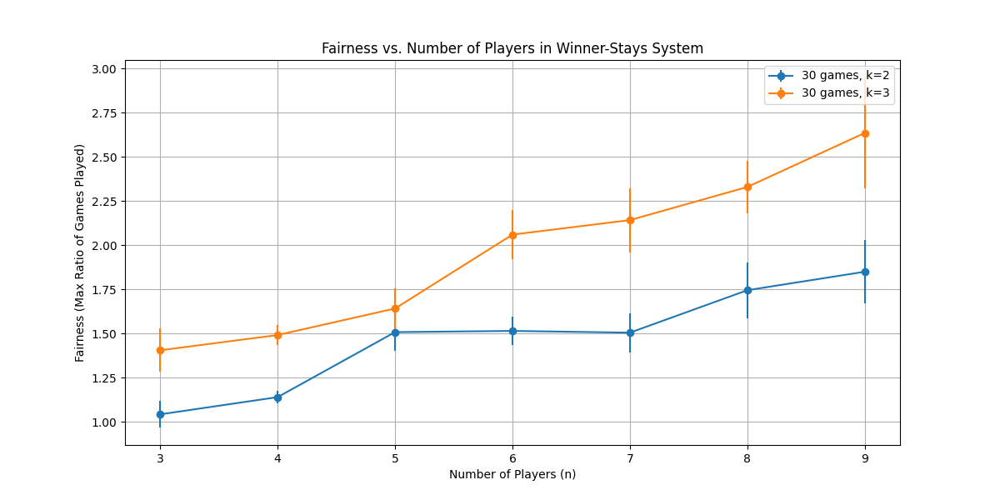
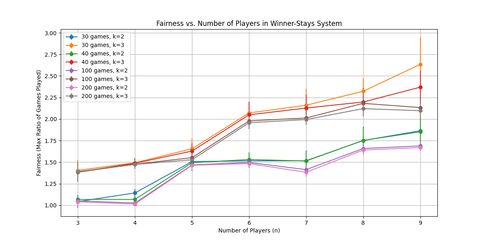

Stop Using the Winner Stays System
1 Introduction
This week, I discovered the table tennis club here at the University of Washington. And while I had a great time playing table tennis with a bunch of talented and kind players, I could not ignore the problem with the winner stays system.
"Winner stays" is a rule where the winner of a match continues to play against the next in line. It’s a rule that I’ve seen many times in casual and competitive communities of sports players and gamers. On the surface it seems fun and easy to implement, but I believe it has many negative consequences. In this post I’ll attempt to measure how bad the problem is and discuss the subjective consequences.
I’d also like to note that winner stays is far from the greatest problem that gaming or sports communities face. However, it’s also a glaringly obvious problem that I think is worth addressing with simple and effective solutions.
2 The Problem
The problem with the winner stays system is pretty obvious to most people: better players get to play more. In this post, I’d like to measure just how bad the problem is and dive a little deeper into the consequences.
To get a measure of how bad the problem is, let’s define a notion of fairness: the maximum ratio between the number of games any two players played. For example, if player A played 5 games, player B played 6, and player C played 10 games, then player C played twice as many games as player A. The fairness in this situation is \frac{10}{5} = 2. Fairness should be as close to 1 as possible. When it’s under 1, some players played fewer games than others.
So how fair is the basic winner stays system? This depends on the relative skill of the players and the number of players. For a simple but realistic situation, imagine we have n players, and one player always wins. In this situation, all other players play one game for every n-1 games the winner plays. The fairness is n-1.
3 Numbers
This is terrible! One player gets to play n-1 times as much as others! Lest you think that this is unrealistic, consider that I’ve observed players play 10 games in a row, not only at the UW table tennis club but in other communities as well.
A common percieved fix to this problem is to have a "winner stays for k games" rule. Usually, k is set to 3. While this helps, it doesn’t fix the problem and invalidates people’s complaints about the system. Taking the same situation as before, if k is 3 then the fairness is still 3 for all n > 5.
So far, we’ve been assuming that one player always wins. How unrealistic is this assumption? Let’s refine our model a bit. Let’s say that we have n players, each player having a "skill level" randomly drawn from a normal distribution with a standard deviation of 1. Now, let’s say that player i wins against player j with probability max(min((i - j), 0.5), -0.5) + 0.5. Players close in skill tend to win against each other with equal probability, while players far apart in skill have a clear winner.
I ran a simulation of this model with varying numbers of players, plotting fairness:

The graph shows, for each number of players, the average fairness over 1000 simulations. Each simulation has the players play 30 games for realism.
In particular, the fairness of the common situation (5 players, k=3) is a little over 1.5. With larger groups of players, things only get worse, with some players playing twice as much as others. Switching to k = 2 doesn’t help as much as I thought it would either, making the k rule unhelpful in general.
Another factor that isn’t shown here is that when the difference in skill is great, matches tend to run shorter. This makes weaker players spend even less time playing the game.
We also see some interesting things in the data. The choice of k changes the shape of the line, I think because of it creates different patterns in the rotation. You might also ask if playing more games would help, and the answer is that it does but only slightly:

4 Consequences
At the UW table tennis club, good and friendly people decided that each table should use a basic winner-stays system. I think this is a common situation in many communities. But why? I suspect that better players usually set the rules, and that this system is the obvious choice. It’s common, easy to implement, and happens to benefit them. Having experienced the winner stays system many times, better players may feel that it’s their turn to benefit from the system.
The winner stays system, besides being basically unfair, creates a bad culture. It sends the message that better players are more important, and more deserving of play time. This is damaging to weaker players for multiple reasons.
First, weaker players may be weighing how much they get to play with the time and economic cost of participating. Many sports or games are expensive and time consuming, perhaps requiring a large commute at an inconvenient time. While socializing is a common secondary goal, people are usually there to play. Getting to play less is discouraging, especially since weaker players tend to be new to the game.
Second, Weaker players are constantly be reminded that they are lesser while watching stronger players play again and again. This negatively affects their self-esteem and motivation to get better. Yesterday, one player told me that they felt the table got "taken over" by a strong player.
Another table tennis player mentioned that they wished people would follow the "winner stays for k games" rule for $k = 3$. This was frustrating to me, since I see this rule as a red-herring meant to placate people who are upset about the system. It’s a rule that doesn’t fix the problem, while it seems like it might on the surface.
I understand that many people like winner stays because it’s simple and exciting. People are motivated to win if they get the natural and only reward available: more play time. However, I feel that there are other, more fair ways to make games exciting, especially in a casual settting. At the table tennis club, the primary goal of most players is to have fun and get better. And for most people, the winner-stays system is not fun and hinders their ability to get better.
5 Alternatives
A simple solution is to flip a coin after each match. The winner of the coin flip gets to play again. I like this solution, but I sense that it would be unpopular.
Round-robin is the obvious solution to this problem, making each player play against every other player. Some say that round-robin can be complex to implement with a large group. It also gets trickier also if the distribution of play time is important (like in a sports setting, where players get tired). And while I think that’s true, I think that something close to a round-robin can be done by any group. After all, it only requires asking the question "who haven’t I played yet?"
To reclaim some of the excitement of winner stays, keeping track of wins and losses and having a final match at the end is a fine idea. This way, it’s a constant overhead on the number of games played during the session. It’s also a good idea to break up into different groups of players divided by skill level, to keep things interesting.
What can people do about winner stays if it’s already in place?